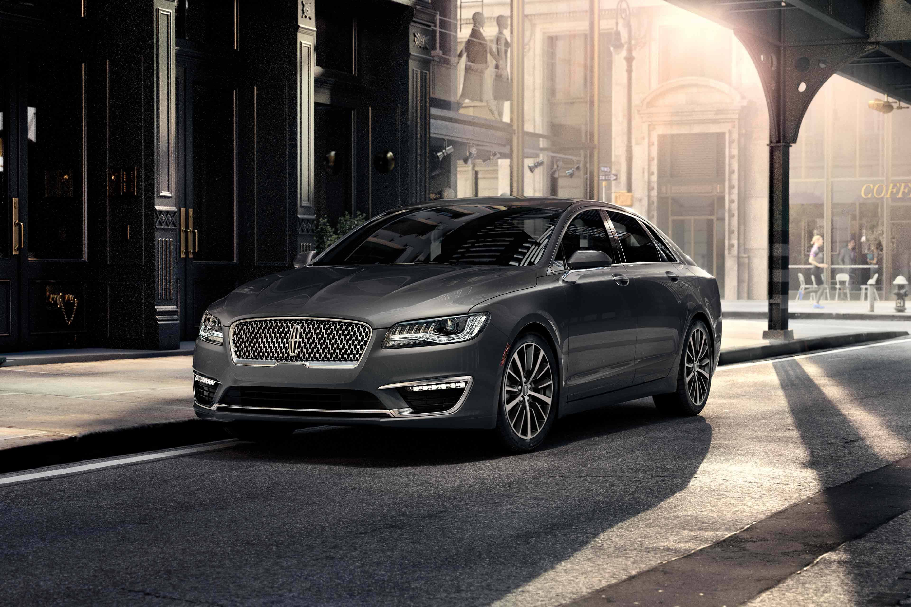
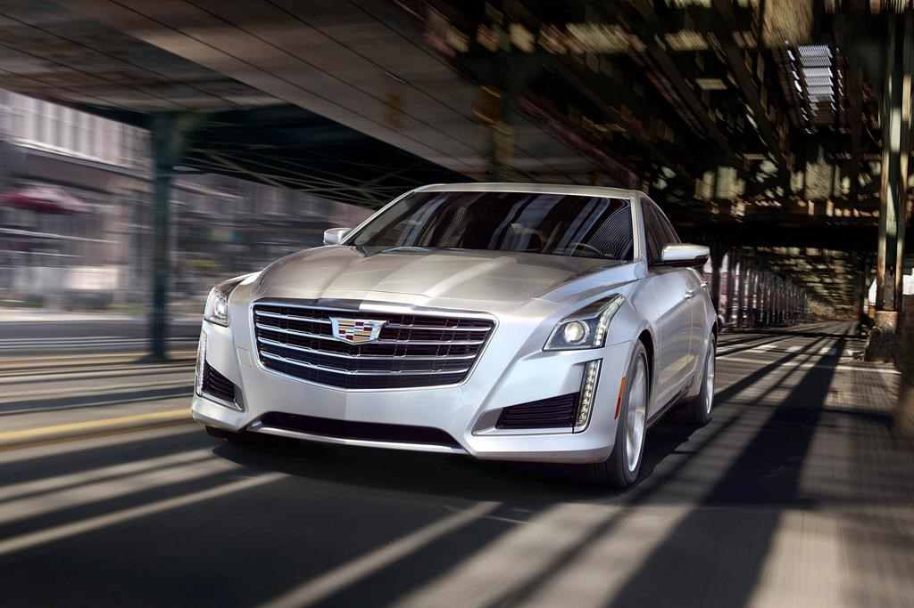

Chevrolet Camaro
The Chevrolet Camaro is a mid-size[2][3] American automobile manufactured by Chevrolet, classified as a pony car[4][5] and some versions also as a muscle car.[6][7] It went on sale on September 29, 1966, for the 1967 model year and was designed as a competing model to the Ford Mustang. The car shared its platform and major components with the Pontiac Firebird, also introduced for 1967. Four distinct generations of the Camaro were developed before production ended in 2002. The nameplate was revived on a concept car that evolved into the fifth-generation Camaro; production started on March 16, 2009.[8] Over 5 million Camaros have been sold. read more

Chevrolet Suburban
The Chevrolet Suburban is a full-size SUV from Chevrolet. The name started in 1934 for the 1935 U.S. model year making it the longest continuously used automobile nameplate in production. It has traditionally been one of General Motors' most profitable vehicles.[1] The 1935 first generation Carryall Suburban was one of the first production all-metal bodied station wagons.[2] The Suburban was additionally produced under the GMC marque until the GMC version was rebranded as the Yukon XL. It was also briefly marketed as a Holden. For most of its recent history, the Suburban has been a station wagon-bodied version of the Chevrolet pickup truck, including the Chevrolet C/K and Silverado series of truck-based vehicles. Cadillac offers a version called the Escalade ESV. read more
Chevrolet Traverse
The Chevrolet Traverse is a seven or eight seat full-size crossover SUV built by General Motors. It is built on the same platform as the GMC Acadia and Buick Enclave (Lambda for first generation, C1XX for second generation). It is the successor to the Chevrolet TrailBlazer SUV and Uplander minivan. Originally marketed as a full-size[1] crossover SUV, the Traverse was built at GM's Spring Hill, Tennessee, assembly plant during 2009, but then production of the Traverse had moved to GM's Delta Township, Michigan, assembly plant in 2010. The 2009 Chevrolet Traverse debuted at the 2008 Chicago Auto Show and the Traverse had arrived at every Chevrolet dealer in October 2008. read more

Ford Fusion
The Ford Fusion is a four-door, five-passenger mid-size sedan manufactured and marketed by the Ford Motor Company. Introduced for the 2006 model year, two generations of the Fusion have been produced in gasoline, gas/electric hybrid, and gas/plug-in electric hybrid variants. The Fusion is manufactured at Ford's Hermosillo Stamping and Assembly plant in Sonora, Mexico, alongside its rebadged variant the Lincoln MKZ, and formerly the Mercury Milan,[2] both of which share its CD3 platform. Ford announced in April 2018 that it would discontinue the Fusion within a few years. read more

Ford Explorer
The Ford Explorer is a range of SUVs manufactured by Ford Motor Company. Introduced in 1990 for the 1991 model year, the Explorer was the first four-door SUV produced by Ford, replacing the two-door Bronco II. Six generations of the Explorer have been produced. The sixth generation was unveiled in January 2019. As with the Ranger, the Explorer derives its name from a trim package used on the F-Series, used from 1967 to 1986. Originally slotted below the full-size Bronco in the Ford truck line, the Explorer is now slotted between the Edge and standard-wheelbase Expedition. read more

Ford F150
The Ford F-Series is a series of trucks marketed and manufactured by Ford. In production since 1948, the F-Series is a range of light trucks marketed as full-size pickup trucks, slotted above the compact Ford Ranger in the Ford truck model range. Since 1999, the F-Series also includes the heavier-duty Super Duty series, which includes pickup trucks, chassis cab trucks, and medium-duty trucks. As of current production, the Ford F-Series includes the F-150 pickup, F-250 through F-450 Super Duty pickups, F-450/550 Super Duty chassis cabs, and F-650/750 Super Duty Class 6-8 trucks. The most popular version of the F-Series is the F-150, now in its thirteenth generation. read more

Lincoln Navigator
The Lincoln Navigator is a full-size luxury SUV marketed and sold by the Lincoln brand of Ford Motor Company since the 1998 model year. Sold primarily in North America, the Navigator is the Lincoln counterpart of the Ford Expedition. While not the longest vehicle ever sold by the brand, it is the heaviest production Lincoln ever built. It is also the Lincoln with the greatest cargo capacity and the first non-limousine Lincoln to offer seating for more than six people. Lincoln Navigator production was sourced from 1997 to 2009 at the Michigan Assembly Plant in Wayne, Michigan. Since 2007, production has also been sourced from the Kentucky Truck Plant in Louisville, Kentucky. read more

Lincoln MKZ
The Lincoln MKZ, is a four-door, five-passenger mid-size sedan manufactured by Ford and marketed as the Zephyr (MY 2006) and as the MKZ (MY 2007–present) by Ford's Lincoln brand — across two generations in both gasoline and hybrid gas/electric models. The MKZ is manufactured at Ford's Hermosillo Stamping & Assembly plant in Mexico. Production is scheduled to end in 2020 to make way for new Ford vehicles. read more

Cadillac Escalade
The Cadillac Escalade is a full-size luxury SUV engineered and manufactured by General Motors. It was Cadillac's first major entry into the SUV market. The Escalade was introduced for the 1999 model year in response to competition from the Mercedes-Benz ML-Class and Lexus LX and to Ford's 1998 release of the Lincoln Navigator. The Escalade project went into production only ten months after it was approved. The Escalade is built in Arlington, Texas. The word "escalade" refers to a siege warfare tactic of scaling defensive walls or ramparts with the aid of ladders or siege towers. read more

Cadillac CTS
The Cadillac CTS is an executive car that was manufactured and marketed by General Motors from 2003 to 2019 across three generations. Historically, it was priced similar to cars on the compact luxury spectrum; but it has always been sized closely to its mid-size rivals. The third generation competes directly with the mid-size luxury cars. Initially available only as a 4-door sedan on the GM Sigma platform, GM had offered the second generation CTS in three body styles: 4-door sedan, 2-door coupe, and 5-door sport wagon also using the Sigma platform — and the third generation was offered only as a sedan, using a stretched version of the GM Alpha platform. read more

Buick LaCrosse
The Buick LaCrosse is a mid-size[5] sedan manufactured and marketed by Buick since 2004. The LaCrosse is now in its third generation, slotted above the Buick Regal as the brand's flagship vehicle. The first-generation LaCrosse replaced the Century and Regal in North America beginning in the 2005 model year, serving as the brand's mid-size car. The automobile was originally sold as the Buick Allure in Canada. For 2010, the LaCrosse was completely redesigned and moved upmarket as a larger premium sedan.[6][7] The model was redesigned again for 2017. Although production ended on February 15, 2019 for the North American market, the LaCrosse is still produced in China where it received a facelift for 2019. read more

Jeep Wrangler
The Jeep Wrangler is a series of compact and mid-size (Wrangler Unlimited and Wrangler 2-door JL) four-wheel drive off-road SUVs, manufactured by Jeep since 1986, and currently in its fourth generation. The Wrangler JL, the most recent generation, was unveiled in late 2017 and is produced at Jeep's Toledo Complex. The Wrangler is arguably an indirect progression from the World War II Jeep, through the CJ (Civilian Jeeps) produced by Willys, Kaiser-Jeep and American Motors Corporation (AMC) from the mid-1940s through 1980s. read more


{kind=link}
{kind=link}
{kind=link}
{kind=link}